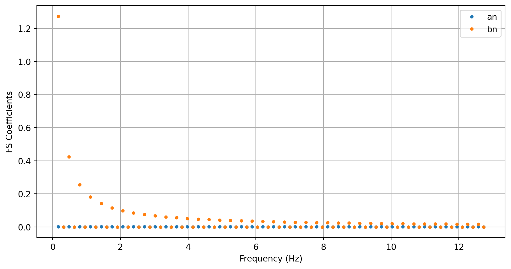
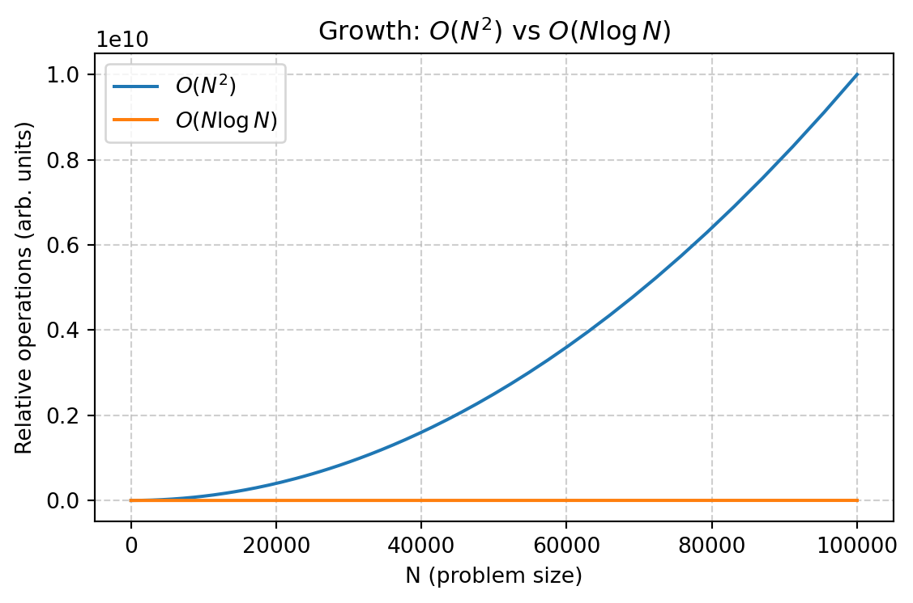
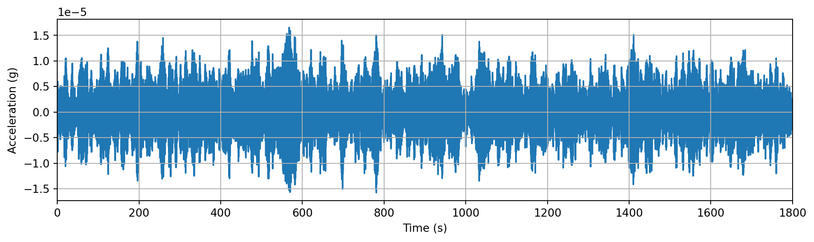
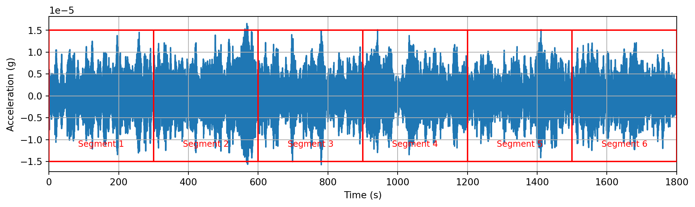
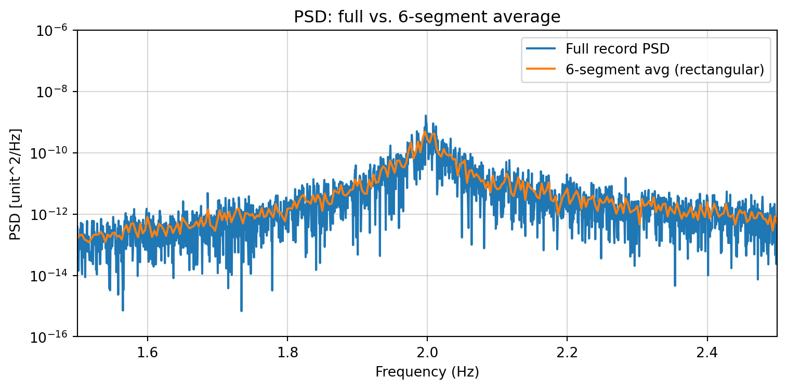
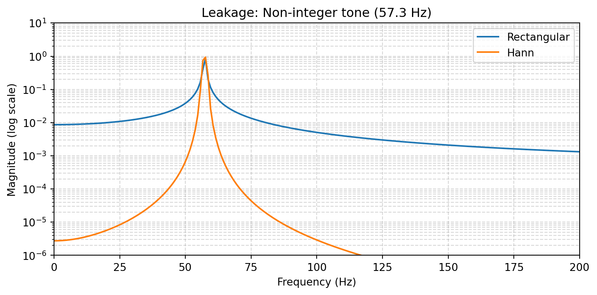
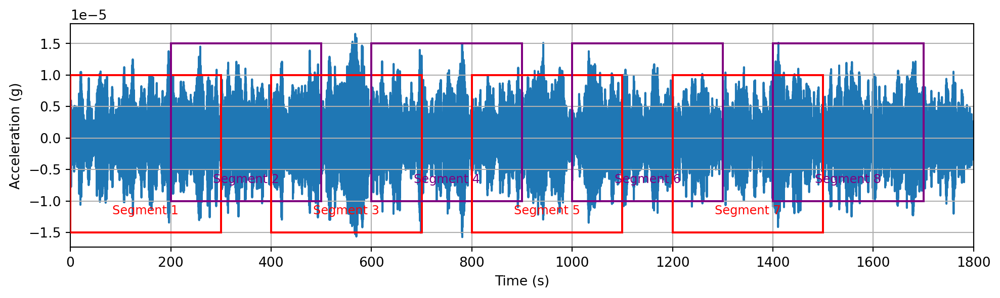
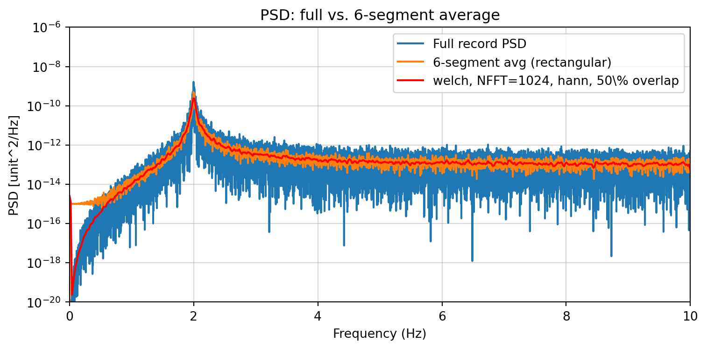
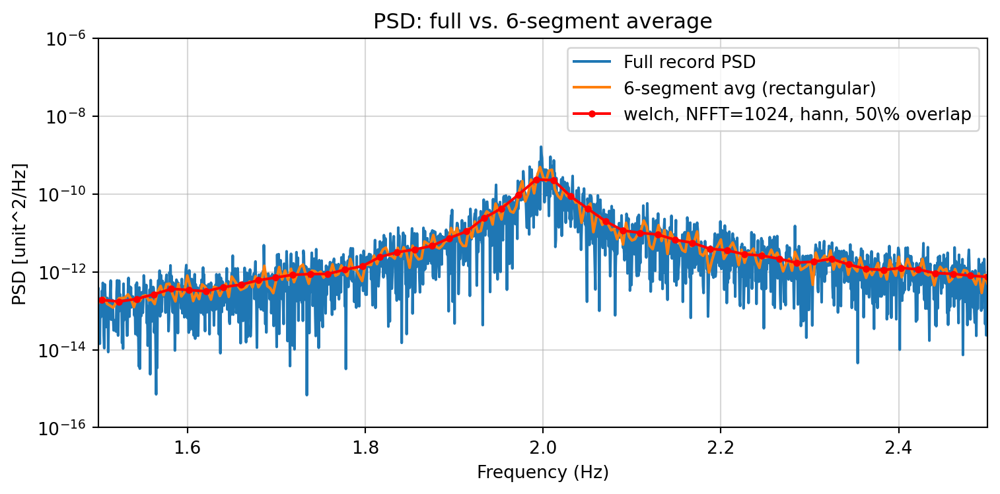

Signal Processing: PSD
Smart Civil Structures: L07
Dr. Ki-Young Koo
Jan 2025
Signal Processing
- Fourier Series / Complex Fourier Series
- Fourier Transform (FT)
- Discrete Fourier Transform (DFT)
- Fast Fourier Transform (FFT)
- Power Spectral Density (PSD) / Amplitude Spectral Density (ASD)
Fourier Series
On a finite interval [-\(T/2\), \(T/2\)] (period \(T\)):
\[ f(t) = \frac{a_0}{2} + \sum_{n=1}^{\infty} \left[a_n \cos(n\omega t) + b_n \sin(n\omega t) \right], \]
\[ a_n = \frac{2}{T} \int_{-T/2}^{T/2} f(t) \cos(n\omega t)\,dt, \quad \omega = \frac{2\pi}{T} \]
\[ b_n = \frac{2}{T} \int_{-T/2}^{T/2} f(t) \sin(n\omega t)\,dt, \quad n=1,2,... \]
The series converges to f(t) if it is continuous, or to the midpoint of left/right limits at jump discontinuities.
Fourier Series: Demo
For the square-wave defined on \([-\pi, \pi]\), Fourier Series \(a_n\) and \(b_n\) are calculated and \(f(t)\) was approximated with varying value of \(n\) from 1 to 80.
\[ f(t) = \frac{a_0}{2} + \sum_{n=1}^{\infty} \left[a_n \cos(n\omega t) + b_n \sin(n\omega t) \right], \]
\[ a_n = \frac{2}{T} \int_{-T/2}^{T/2} f(t) \cos(n\omega t)\,dt, \quad \omega = \frac{2\pi}{T} \]
\[ b_n = \frac{2}{T} \int_{-T/2}^{T/2} f(t) \sin(n\omega t)\,dt, \quad n=1,2,... \]
Fourier Series: Demo
Fourier Series: Demo

Fourier Series: Demo

Complex Fourier Series
Periodic \(f(t)\) (period \(T\)) with fundamental \(\omega = 2\pi/T\):
\[ f(t) = \sum_{n=-\infty}^{\infty} c_n \, e^{i n \omega t} \]
Coefficients over one period:
\[ c_n = \frac{1}{T} \int_{-T/2}^{T/2} f(t) \, e^{-i n \omega t} \, dt \]
Link to real-form coefficients: \(a_n = c_n + c_{-n}\), \(b_n = i(c_n - c_{-n})\), and for real \(f(t)\), \(c_{-n} = c_n^*\).
Parseval’s Theorem
Energy Relationship:
\[ \frac{1}{T}\int_{-T/2}^{T/2} |f(t)|^2 dt = \sum_{n=-\infty}^{\infty} |c_n|^2 \]
Complex FS to Fourier Transform
- For a periodic signal, \(c_n\) are discrete lines at \(\omega_n = n\,\omega\) with spacing \(\omega=2\pi/T\).
- As \(T\) grows, the spacing shrinks. In the limit \(T \to\infty\), the lines form a continuum and \(c_n\) scales to the Fourier transform: \[c_n \to \frac{1}{T} F(\omega)\]
- Energy correspondence: \(\sum_n |c_n|^2 \to \frac{1}{2\pi}\int_{-\infty}^{\infty} |F(\omega)|^2 d\omega\).
- Interpretation: \(c_n\) becomes a sampled spectrum that densifies into \(F(\omega)\) as the period goes to infinity.
Fourier Transform
For integrable \(f(t)\), forward/inverse transforms:
\[ f(t) = \frac{1}{2\pi} \int_{-\infty}^{\infty} F(\omega) e^{i \omega t} \, d\omega \] \[ F(\omega) = \int_{-\infty}^{\infty} f(t) e^{-i \omega t} \, dt \]
- Frequency \(\omega\) is rad/s; \(F(\omega)\) captures spectrum amplitude/phase.
Fourier Transform: Demo
For the odd Square Pulse:
\[ f(t) = \begin{cases} 1, & 0 \le t < \pi, \\ -1, & -\pi < t < 0, \\ 0, & \text{otherwise}. \end{cases} \]
Fourier Transform is
\[ F(\omega) = \int_{-\pi}^{0} (-1)e^{-i\omega t} dt + \int_{0}^{\pi} e^{-i\omega t} dt = \frac{4}{i\omega} \sin^2\left(\frac{\omega\pi}{2}\right) \]
- \(F(\omega)\) is purely imaginary and odd (time signal is odd). Magnitude is \(\propto \sin^2(\omega\pi/2)/|\omega|\).
- Main lobes at low \(\omega\); nulls at \(\omega = 2k\,\pi/\pi = 2k\) (integer multiples of \(2\) rad/s).
Fourier Transform: Demo

Limitation of Fourier Transform
- The continuous Fourier Transform assumes \(f(t)\) is known as an analytic function on \((-\infty, \infty)\).
- In practice we only have sampled time histories over a finite duration; we cannot integrate the true FT directly.
- Solution: sample \(f(t)\) at rate \(f_s\) over \(N\) points → use the Discrete Fourier Transform (DFT) to analyze spectra.
- Consequences: sampling imposes Nyquist limit; bin spacing is \(\Delta f = f_s/N\).
Discrete Fourier Transform (DFT)
For a length-\(N\) sequence \(x_k\), the DFT and inverse DFT are:
\[ X_m = \sum_{k=0}^{N-1} x_k\,e^{-i 2\pi mk / N},\quad m = 0,\dots,N-1 \]
\[ x_k = \frac{1}{N}\sum_{m=0}^{N-1} X_m\,e^{i 2\pi mk / N},\quad k = 0,\dots,N-1 \]
- \(X_m\) gives amplitude/phase of the \(m\)-th discrete frequency bin.
DFT in Practice → FFT
- Cost: DFT is \(O(N^2)\) operations; impractical for large \(N\) or real-time streaming.
- Fast (Discrete) Fourier Transform: factorizes the DFT to \(O(N \log_2 N)\), making long/real-time spectra feasible (no change to leakage/aliasing physics).

- Implementation notes: many FFTs prefer composite \(N\) (powers of two), handle real-input symmetries, and support overlap/add for sliding spectra.
FFT: Demo
Acceleration response of a SDOF System (\(f_n\) = 2 Hz and damping ratio \(\zeta\)=0.9%) was simulated under an random white-noise excitation for 100 minutes with Samping Frequency of 20 Hz.

FFT: Demo
Zoomed around the peak…

Power Spectral Density
- Power Spectral Density \(P_{YY}(f)\)
\[ P_{YY}(f) = \lim_{T\to\infty} \frac{1}{T}\,Y(f)Y(f)^* = \lim_{T\to\infty} \frac{1}{T}\,|Y(f)|^2 \]
- FFT \(Y(f)\) is a vector of complex values, but PSD \(P_{YY}(f)\) is a vector of real values
Improving PSD Estimates
The main idea is Averaging…


PSD Averaging Effect

PSD Averaging Effect

Leakage
- If the 1st point and last point of a segment have different values???
- The way to address this issue is called Windowing.
- A simulation:

Welch Method
Improved PSD estimation by allowing overlapping and Windowing

Welch Method: Demo

Welch Method: Demo

Welch Method: Trade-off
Trade-off between the smoothness and the frequency resolution
By reducing nperseg (=NFFT)
\(\to\) more segments \(\to\) more averaging \(\to\) smoother PSD, but
\(\to\) bigger frequency resolution \(\Delta f=1/T=1/(\text{nperseg}\Delta t)\)
Closure
PSD is a useful tool to see frequency contents of a given measured time history.
There are options for you to choose from: 1) NFFT, and 2) overlap ratio.
There is no clear rule to choose them for a signal, but they are a user’s choice
You may try different values and choose a best one for you
Hence, different peoples’ signal processing results may be slightly different.